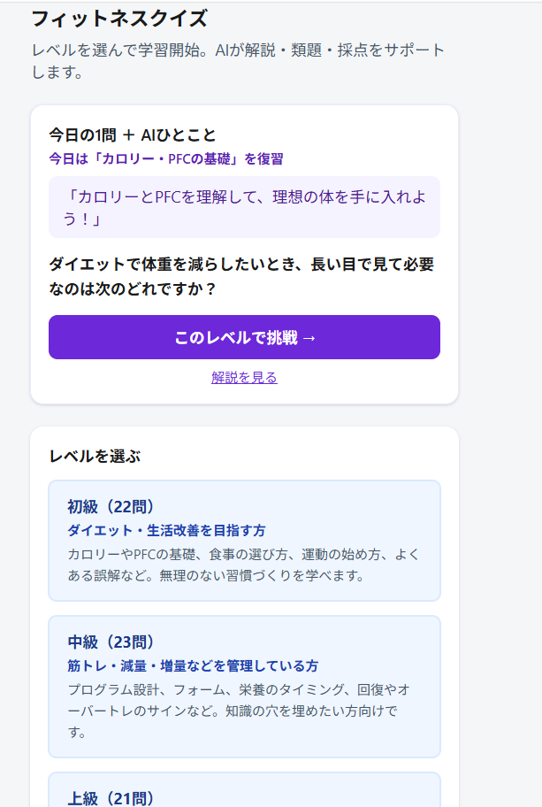

Client Body Make Hub
AIボディメイク管理システム
開発期間：約3週間
食事・体重・筋トレを記録し、AIアドバイスとLINE通知まで一気通貫。
PROFILE
はじめまして。肩幅モンスターです。
インストラクター歴7年、パーソナルトレーナー歴2年。自分自身もコンテストに出場した経験があり、減量をする側の視点と指導する側の視点——どちらにも寄り添い、柔軟にシステム開発の対応ができると思っています。
食事・トレーニング・記録の現場では、意志だけでは続かない。「仕組み」があるかどうかが分かれ道だと感じてきました。そこでAI・API連携・自動化を学び、記録アプリ、LINE Bot、献立提案、会議議事録の自動化など、日常を楽にするツールを自作してきました。
いまはジム・コーチ・オンライン指導者や、ボディメイク中の方を想定し、食事記録からAIアドバイス、LINE通知までつなぐ「続く仕組み」を、一緒につくるお手伝いをしています。現場の言葉で設計し、1〜2週間の小さなPoCから始めて広げる進め方を大切にしています。
STORY
BEST BODY JAPAN — 減量・ポージング・舞台まで、ボディメイクの全工程を経験
肩幅モンスターの由来は肩のトレーニングが一番好きで友人から付けられた、肩幅モンスターになりたいという自分の想いも込められています。
6
Projects
制作実績
11
API Integrations
API連携
7年 インストラクター
2年 トレーナー
Experience
フィットネス現場経験
WORKS
ジム・コーチ向けを中心に、計6件。カードから詳細ページで画面キャプチャと技術構成をご覧いただけます。
Client Body Make Hub
開発期間：約3週間
食事・体重・筋トレを記録し、AIアドバイスとLINE通知まで一気通貫。

Fit Quiz AI
開発期間：約2週間
初・中・上級のクイズで、スタッフ教育・会員の知識定着を支援。

Coach LINE Assistant
開発期間：約1週間
LINEで会話が続く。DifyとWebhook連携のボット基盤。
TOOL
いまの目標を選ぶと、トレーナー視点の簡易アドバイスを表示します（デモ機能）。
あなたへのアドバイス
FOR YOU
ジム・コーチ向けの支援を中心に、小さく試してから広げる進め方を大切にしています。
会員の食事・体重・トレーニング記録がバラバラで、指導に時間を取られている方へ。
LINEで指導しているが、記録の回収やフォローが手作業になっている方へ。
記録→AI→LINE通知の流れを設計。制作物はデモ・GitHubで動くものを確認いただけます。
SKILLS
ジム・コーチ向けのサービスを中心に、API連携と自動化で業務を楽にします。料金・範囲は案件ごとに異なるため、まずはご相談ください。
食事・体重・トレーニングの入力、Googleスプレッドシートへの保存、グラフ表示。DifyによるAIアドバイス連携も可能です。
料金：要相談
FAQ対応、食事・トレーニングの一次相談、会員フォローの土台づくり。Messaging APIとDifyを連携します。
料金：要相談
議事録自動化、Google Docs保存、定時通知など既存ツールとの連携。
料金：要相談
現状のツール、困りごと、理想の運用を整理
1〜2週間で試せる最小構成を提案・実装
フィードバックを反映し、機能を段階的に拡張
通知設定、プロンプト調整など（任意）